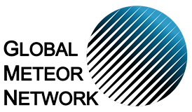

Useful Services
Tools, forecasts and measurements
Meteo Pula
Pljusak.com
Lightning Maps
Lightning detection system
Books
Search library materials
Spot the Asteroid
Find the asteroid in the image

GMN Camera Status
Global Meteor Network
What can we see on the sky?
Objects visible tonight